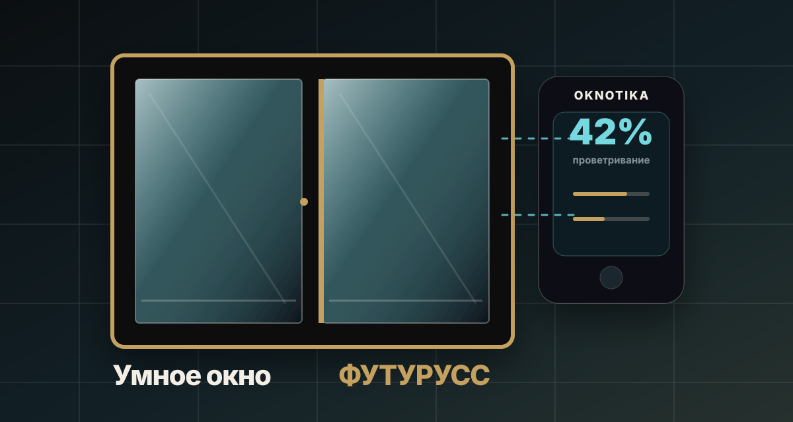

Зависит от пользователя
- ручное открывание;
- нет сценариев микроклимата;
- сложно управлять группой окон;
- не реагирует на дождь, ветер и качество воздуха;
- инженерия здания живёт отдельно.
OKNOTIKA × ФУТУРУСС · автоматика створок
Окно, которое думает. Здание, которое дышит.
Не привод, прикрученный к раме, а светопрозрачная система: скрытая интеграция внутри конструкции, управление с панели, пульта или смартфона и сценарии проветривания по датчикам, расписанию и командам BMS.

Зачем
Обычная створка требует действия человека. OKNOTIKA может работать по сценарию: проветривать, закрываться от дождя и ветра, реагировать на качество воздуха и быть частью Smart Home или BMS.
Как работает
Исполнительные механизмы интегрируются в конструкцию. Снаружи нет громоздких приводов, ножниц и рычагов — архитектура остаётся чистой.
Панель, пульт, приложение, расписание, датчик или BMS.
Обрабатывает команды и состояние окна, выбирает сценарий.
Работает внутри конструкции, без наружной механики на фасаде.
Открытие, пауза, закрытие и позиционирование по заданному проценту.
Окно выглядит как современная светопрозрачная конструкция, а не как изделие с прикрученным мотором.
Безопасные режимы проветривания и защита от случайного управления. Для девелоперских объектов это важнее “умной игрушки”.
CO₂, влажность, дождь, ветер, пожарная сигнализация, присутствие и качество воздуха — окно может работать по условиям здания.
Управление
OKNOTIKA не заставляет выбирать один способ управления. На объекте могут работать локальная панель, пульт, смартфон, расписание и сценарии инженерных систем.
Локальный сценарий рядом с окном: открыть, остановить, закрыть, выбрать положение.
Управление через SmartLife/Tuya и мониторинг состояния створки.
Для помещений, где нужен простой сценарий без интерфейсов и обучения.
Работа в составе системы здания: датчики, расписания, группы окон, аварийные сценарии.
Варианты исполнения
Принцип управления сохраняется, а материал выбирается под архитектуру, бюджет, нагрузку, эстетику и задачу объекта.
Энергоэффективные решения для квартир, офисов, общественных и девелоперских объектов.
Максимальная жёсткость и минимальный визуальный профиль там, где стекло должно стать архитектурой.
ИЖС, коммерческая недвижимость, общественные здания и современная фасадная архитектура.
Премиальные дома, резиденции и объекты, где натуральный материал — часть образа.
Размеры и ограничения
Показываем то, что подтверждено материалами по автоматике: прямоугольная вертикальная откидно‑поворотная створка, скрытая интеграция и рабочие габариты под архитектурные решения.
Применение
Пришлите задачу, чертёж, фото объекта или желаемый сценарий. Мы соберём инженерный маршрут: система, автоматика, фурнитура, монтаж и документы.
Получить консультацию